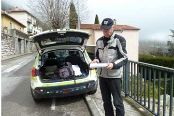
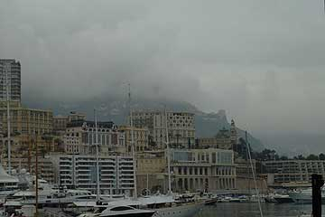
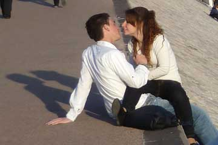
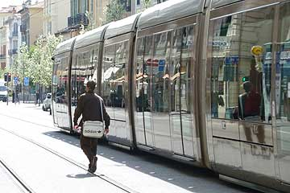
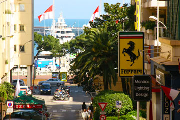
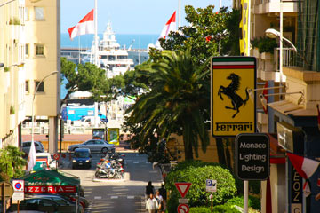
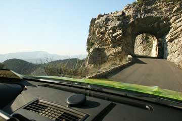
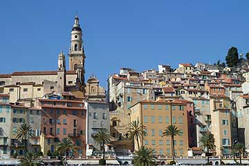
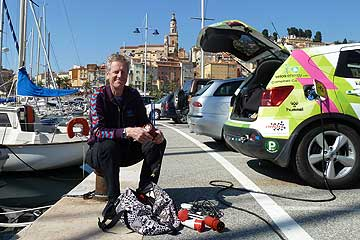
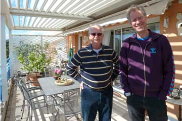

Igen i dag har jeg, Grønne kørt på små bjergveje mellem Monaco og Frankrig.
Efter en gå tur ud på pynten ved Cap Ferrat hørte Hjalte en summelyd ovre i førersiden. På det tidspunkt var jeg begyndte at svede og ryste. Hjalte troede at det måske var min bremsemotor? De havde jo bremset en del ned gennem hårnålesvingene. Nina sagde, at hun blev helt bims af al den summen. De bekymrede sig om hvorvidt jeg kunne gå i stykker før rallyet på lørdag? Til sidst opdagede de at de var var kommet til at sætte varme på mig uden at tænde for ventillatoren. I en fart slukkede de for varmen, og jeg fik straks min normale puls igen. På hjemvejen fik jeg lov at stå og hvile mig imens Hjalte og Nina gik på Matisse-museet i Nice, som de blev ret begejstrede for.
Mange hilsner Grønne

I dag hvor Frankrig skiftede til sommertid, øsede regnen ned. Ved middagstid kørte vi fra Nice til Monaco. Smukt var her stadig selv om bjergene lå indhyllet i regntåger. Vi gennemkørte første del af Rally-ruten igen og lavede en regnefejl. Så vi må gøre det om imorgen. Grønne kører
perfekt , og står godt fast på dækkene. Men jeg tør ikke køre hurtigt nok i hårnålesvingene på stykket med den smalle dårlige vej, og Hjalte som sidder yderst mod kanten synes at jeg kører tæt på. Det er spændende, og vi nyder turen med svimlende udsigter og sugende afgrunde.
Nina


I pragtfuldt sommervejr med frisk vind fra det blå middelhav gik vi tur i Cannes. I havnen lå pralende overdimensionerede lystbåde, nogle så store som færger. Her gælder det om at vise at man har penge nok. Vi så bygninger til filmfestivaler, luxushoteller og spillekasinoer. Som en perlerække lå de store modehuses butikker. I udstillingsvinduerne sås ikke kun dyrt tøj, men også diamantbesatte mobiltelefoner og armbåndsure. Vi blev så lettede over ikke at være med i racet om at vise hvem der har flest penge. Bagefter besøgte vi vores Rally-venner Torben og Merete, som havde forberedt en vidunderlig middag. Vi snakkede om biler, og havde en herlig aften sammen.
Nina og Hjalte

Dagen var kommet hvor vi måtte se lidt mere af Nice, som vi ellers bare kører igennem. Derfor gik vi til fods forbi blomster- og frugtmarkedet og en lang række små restauranter med borde på gaden mellem nyudsprungne træer. Vi prøvede de blå bycykler og kom til en gade kun til moderne sporvogne som kørte med korte intervaller. Vi tog sporvognen til den gamle bydel, hvor vi gik en tur i de små gader med små sjove butikker. Ude ved vandet, nød de første strandgæster foråret.
Nina
 

Sammen med Torben kørte vi anden del af rally-ruten, og lidt af den første rute som vi manglede. Da vi fik brug for en pause drak vi kaffe og spiste chokolade-croisanter. Grønnes strømmåler drillede igen. Vi troede at der var rigeligt strøm tilbage da vi trillede tilbage til Nice. Derfor var det et chock da Grønne pludselig gik i stå af strømmangel. Lykkeligvis var den kære bil standset lige udenfor hotellets dør! Efter en halv time med ledning ud fra hotel Aramis´s køkkenvindue kunne Grønne selv køre hen i garagen.
Nina

Først måtte vi have strøm til grønne. Det fik vi i Monaco, hvor der er ladestik i de offentlige parkeringskældre. Imens Grønne ladede spiste vi frokost og shoppede. Grønne havde smeltet sit franske elstik og for at køre rally havde vi brug for et stopur. Da vi havde købt disse ting besøgte vi Monte Carlos fornemme automobilklub. Bagefter ville vi øve os på anden del af rally-ruten for elbiler. Det var blevet hen på eftermiddagen og myldretid, så det tog lang tid at komme ud af byen- og da vi nåede op på de små snoede bjergveje kom vi til at køre bag en langsom lastbil med sten. Vi var ti minutter bagefter tidsplanen, og kørte forkert et par gange. Senere kom vi ud på en lille naturvej med kun et spor, hvor jeg måtte køre forsigtigt om hjørnerne, da der kunne komme modkørende. På vejen ned koncentrerede vi os om at spare på strømmen, så vi kunne køre helt hjem til Nice. Jo, vi lærte en masse undervejs og havde haft en pragtfuld dag med de skønneste udsigter.
Nina

Vi måtte flytte fra hotel Aramis i Nice til hotel Parisienne i Menton, da vi ikke havde booket for mere end en nat. Menton har en smuk gammel bydel, som er hyggelig og rar at besøge. Flytningen tog sin tid i og dagen gik med indkøb af mad, og lidt kontorarbejde- den slags hører jo med når man rejser og gerne vil kommunikere med omverdenen. Hotel Parisienne var bestyret af et par elskelige hvidhårede damer, alt var fint og godt. Men vi manglede et køkken, det er dyrt at gå på restaurant på disse kanter, og Grønne stod parkeret udenfor hotellet uden strømstik.
Nina


Af skræk for at klikke sikringerne i garagen havde vi skruet ned for grønnes opladestrøm. Så vi startede igen uden en fuld opladning. Sammen med Torben som fik en plads i bilen gennemkørte vi for første gang en del af Rallyruten. På vejen tilbage til Nice løb grønne ud for energi. Vi fandt et værksted - men nej! så var der heldigvis en forladt terrasse overfor med tre elstik. Der ladede vi i en halv time så vi kunne køre videre til Eze. Der fandt vi strøm uden for en restaurant. Imens Grønne ladede, gik vi en tur op i det gamle Eze, der var bygget som en fæstning.
Så kunne vi omsider køre tilbage til Nice, hvor vi tog afsked med Torben, og Grønne kom i garage efter en lang dag.
Nina

Sikringerne på Campingpladsen sprang om natten så vi startede dagen uden at Grønne var fuldt opladet. I Cannes besøgte vi Torben, en erfaren rallykører , som vil hjælpe os med at gennemføre Monte Carlo Rallyet for elektriske biler. På Grønnes sidste strøm kørte vi op i bjergene mod en campingplads. Den viste sig at være lukket. Hotellet ved siden af var også lukket. Jeg fik øje på forsamlingshuset hvor nogle kvinder var ved at gøre rent efter en muslimsk bryllupsfest. Der fik Grønne strøm i en times tid, imens Hjalte, via vores sattelitantenne, bookede et værelse på Hotel Aramis i Nice. Da vi sultne og trætte nåede frem, var Grønne igen kørt tom. Efter en halv time blev vores fortvivlede banken og ringen på hotellets dør omsider hørt. Vi kom ind og fik et værelse. Der var et køkken vi kunne benytte og Grønne kom ned i garage med strøm!


19-3. I LILLE HAVN
Efter et besøg i det hektiske st. tropez standsede vi i en tilfældig lille havn hvor vi fandt et elstik, så Grønne kunne lade imens vi spiste fr avores madkasse og bagefter gik på cafe. Solen skinnede, havet var azurblåt og alt var godt. Om aftenen kom vi til en kommunal lejrplads hvor vi blev naboer til nogle flinke danskere i deres mobile home. De tilbringer vintrene i Sydfrankrig Portugal og Spanien. Ægteparret inviterede på kaffe og chokolade, så vi tilbragte den kølige aften med truende regnskyer inde i deres vogn.